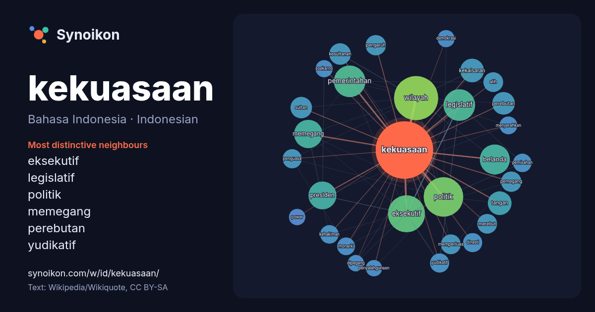

Bahasa Indonesia · Indonesian · popular word
kekuasaan
“power” · The words found around it in 1138 instances from Indonesian Wikipedia, Wikiquote.

Most distinctive neighbours
- eksekutif 40×
- legislatif 33×
- politik 20×
- memegang 20×
- perebutan 20×
- yudikatif 16×
- kesultanan 15×
- pemegang 14×
- kehakiman 14×
- kekaisaran 14×
- memperluas 13×
- pemerintahan 13×
- pemisahan 13×
- monarki 12×
- wilayah 12×
- merebut 11×
- presiden 11×
- alih 11×
- penyalahgunaan 11×
- soekarno 11×
× = how many times more often than in general Indonesian Wikipedia text.
Most frequent neighbours
- wilayah 80
- politik 64
- eksekutif 56
- negara 55
- memiliki 54
- legislatif 41
- pemerintahan 41
- pemerintah 40
- belanda 37
- memegang 33
- presiden 32
- raja 32
- kerajaan 29
- orang 26
- kekaisaran 23
- pusat 23
- tangan 23
- mengambil 22
- sistem 22
- perebutan 21
In context
- pembicaraan umum, kekuasaan dapat berarti kekuasaan golongan, kekuasaan raja, kekuasaan pejabat negara. Sehingga tidak salah bila dikatakan kekuasaan adalah kemampuan Wikipedia snippets · Kekuasaan
- berlangsung pada abad ke-8 Masehi menandai sebuah negeri Jepang dengan kekuasaan yang tersentralisasi. Ibu kota dan istana Kerajaan berada di Heijo-kyo Wikipedia snippets · Jepang
- berhasil memperoleh kekuasaan dan janda Mao, Jiang Qing beserta rekan-rekannya, Kelompok Empat, yang telah mengambil alih kekuasaan negara, ditangkap dan Wikipedia snippets · Tiongkok
- sebagai saingan, dan ia digulingkan dari kekuasaan pada tahun 1971. Begitu ia dicopot dari posisi kekuasaan, Nasution berkembang menjadi lawan politik Wikipedia snippets · Abdul Haris Nasution
- tahun 2018 hingga 2020, menggantikan Najib Razak sekaligus mengakhiri kekuasaan Barisan Nasional selama 60 tahun terakhir di Malaysia. Kepemimpinan Mahathir Wikipedia snippets · Mahathir Mohamad
- lain karena kenyataan bahwa kekuasaan tertinggi bukan di tangan rakyat tetapi di tangan MPR yang dikuasai pemerintah, kekuasaan yang terlalu besar pada presiden Wikipedia snippets · Undang-Undang Dasar Negara Republik Indonesia Tahun 1945
- memberikan nasihat dan pertimbangan kepada Presiden dalam menjalankan kekuasaan pemerintahan negara. Pemberian nasihat dan pertimbangan tersebut Wajib Wikipedia snippets · Dewan Pertimbangan Presiden Republik Indonesia
- demokrasi yang perlu dikembangkan serta diaplikasikan agar penyalahgunaan kekuasaan, wewenang ataupun jabatan oleh aparatur dapat diminimalisasi; Bahwa dalam Wikipedia snippets · Ombudsman Republik Indonesia
More Indonesian words
- air
- anjing
- bahasa
- emas
- iklim
- jantung
- jembatan
- kebenaran
- kehidupan
- keluarga
- kematian
- kereta
- kerja
- kesehatan
- kesenian
- kucing
- lingkungan
- makanan
- sains
- sejarah
- tuhan
- uang
Precomputed on 2026-10-09 with default settings (±5 words, medium corpus). The interactive map can refresh it with live data.